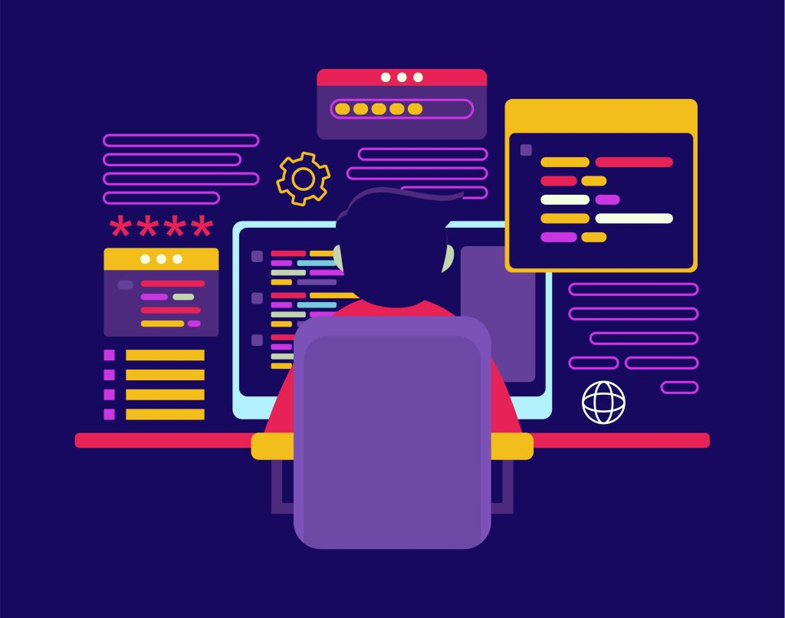
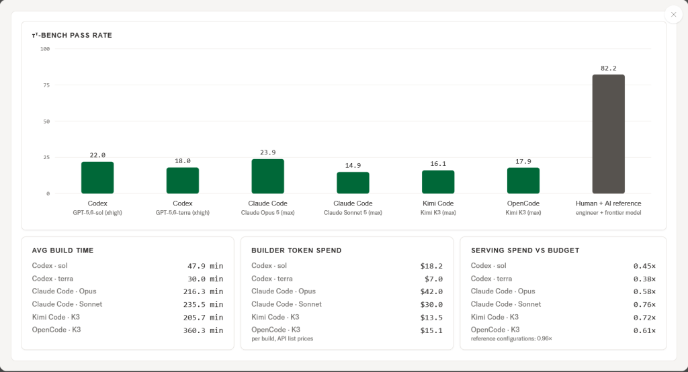

10 The New Stack 게시일 2026.09.09
Sierra의 Hyper-τ-bench, 자율 개발 에이전트 모두 25% 미만
기업은 고객응대, 업무처리, 코딩 지원 같은 에이전트를 빠르게 만들고 싶어 한다. 그런데 에이전트를 잘 쓰는 능력과, 새 에이전트를 설계해 만드는 능력은 다를 수 있다. Sierra의 Hyper-τ-bench는 이 차이를 재는 새 벤치마크다.
방법과 결과
연구진은 개발 에이전트가 실제로 무엇을 했는지도 분석했다. 반복해서 나온 문제는 네 가지였다. 비즈니스 정보를 너무 일찍 조사 중단한 점, 정보가 비었을 때 질문을 거의 하지 않은 점, 완성 에이전트의 추론 비용을 잘못 잡은 점, 다른 기술 설계를 충분히 시험하지 않은 점이다.
정보 탐색 문제는 은행에서 특히 두드러졌다. 개발 에이전트는 약 1,700개 파일 중 80개도 채 열어보지 않았다. 대신 검색 결과에 의존했다. 그 상태에서 필요한 업무 규칙을 다 찾지 못한 채 구현을 시작했다.
질문 부족도 수치로 드러났다. 전체 실행 기록에서 사업부에 묻는 상호작용은 도구 호출의 0.3%뿐이었다. 어떤 과제는 질문해야만 20개에서 25개의 요구사항을 찾을 수 있었지만, 에이전트는 4개보다 많이 묻지 않았다. Sierra는 질문 수와 결과 차이도 제시했다. 전문가 기준이 95%에서 100%인 과제에서, 질문이 없던 빌드는 5%였다. 질문 1개 뒤에는 15%였다. 질문 2개 뒤에는 25%였다.
비용 설계도 흔들렸다. Hyper-τ-bench는 완성된 고객응대 에이전트가 대화 한 건을 처리할 때 쓸 수 있는 AI 호출 비용 상한을 둔다. 두 빌드는 이 한도를 각각 3배, 1.3배 넘겨 0점을 받았다. 한도 안에 든 빌드들도 평균 지출은 허용액의 45%에 그쳤다.
기술 선택도 보수적이었다. 빌드의 92%는 단일 LLM 도구 루프를 썼다. 통신 실험 하나에서는 다른 구조를 암시하는 한 문장만 추가해도 점수가 31%에서 67%로 올랐다. Codex 빌드의 96%는 완성 에이전트용 모델로 OpenAI 계열을 골랐다. Kimi가 만든 빌드에서는 그 비율이 13%였다. 익숙한 모델군을 우선 고르는 경향이 있었던 셈이다.
| 항목 | 수치 |
|---|---|
| 최고 점수 | 23.9% |
| GPT-5.6 Sol 점수 | 22% |
| Human + AI reference | 82.2% |
| 은행 과제 수 | 35개 |
| 은행 정책 사실 수 | 2,969개 |
| 질문 상호작용 비중 | 0.3% |


업계의 움직임
Sierra는 이 벤치마크를 오픈소스로 공개했다. 자사 Ghostwriter 같은 도구가 이미 에이전트 구축을 돕는다는 설명도 붙였다. 다만 발췌문에는 다른 벤더의 공식 반응이나 고객 도입 사례는 나오지 않았다. 아직 공개된 반응은 확인되지 않았다.
시사점과 체크포인트
우리 회사가 AI 에이전트를 도입하거나 내부용 에이전트를 만들 때, 코드 생성 능력만으로는 부족하다. 업무 규정 수집, 예외 규칙 확인, 질문 루프, 비용 상한, 테스트 방식이 같이 들어가야 한다. 은행처럼 정책 사실이 많은 도메인일수록 이 차이가 크게 난다.
특히 금융사는 질문을 안 하는 에이전트를 경계해야 한다. 규정과 상품 정책이 문서 전체에 흩어져 있으면, 검색 몇 번으로는 필요한 사실을 다 모으기 어렵다. 묻지 않고 가정한 답은 수수료 분쟁, 약관 안내, 계정 처리 같은 민감 업무에서 바로 오류가 된다.
실행 체크포인트는 다음과 같다.
- 에이전트 구축 단계에서 누가 요구사항 공백을 메우는가
- 사업 부서에 묻는 절차를 도구 안에 넣을 수 있는가
- 대화 한 건당 비용 상한을 사전에 정했는가
- 한 가지 구조만 쓰지 말고 대안 설계를 비교하는가
- 완성 에이전트를 실제와 비슷한 숨은 시나리오로 재시험하는가
이번 수치는 초기 공개 결과다. Human + AI reference는 정답 정보를 가진 작성자 기준이라 직접 비교에 주의가 필요하다. 우리 회사가 벤더 평가를 할 때도, 레퍼런스 데모와 자율 구성 결과를 구분해 봐야 한다.
주요 용어
원문 정보
제목: Claude performed best on a new benchmark for 'agents that build agents'. But it passed fewer than a quarter of the tests.
게시일: 2026.09.09
출처 URL: https://thenewstack.io/claude-build-agents-benchmark/